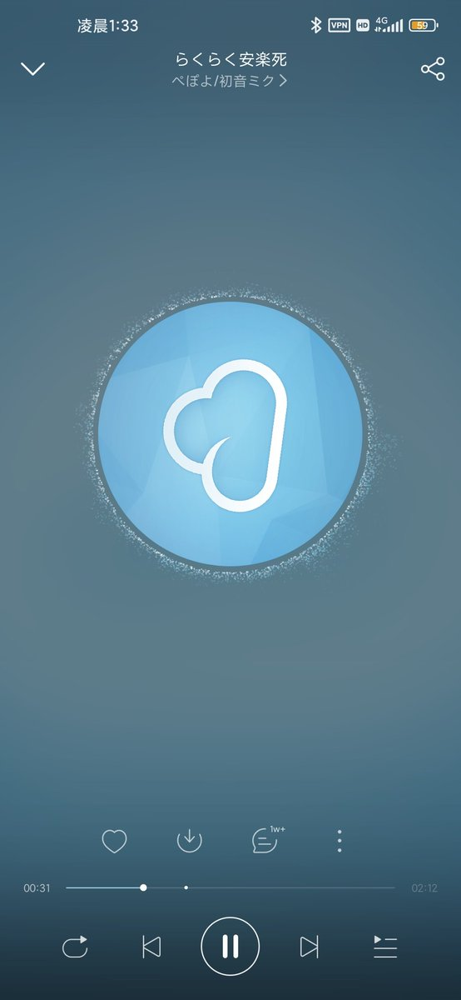
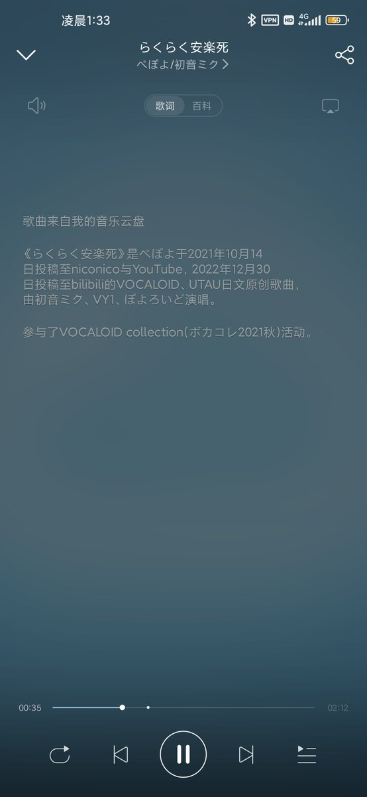
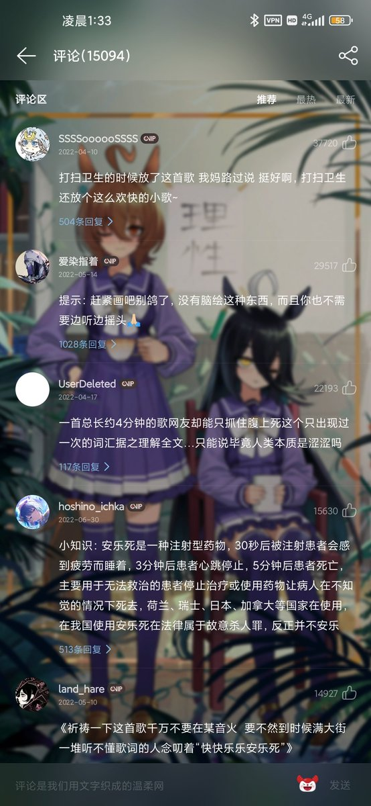

青空 しょな
@seikuushona
@YuehuaSomniorum 想起来了 2022 年的自己。
那时候的情况似乎差不多？
——除了当时还能直接听，以及评论区还能评论以外，都和现在差不多。
歌词当时就难以存活。那会的我还在评论区吐槽要听的话只能去 Bilibili 了。
时间在不断的流逝，政策在不断的变化。
——但有一部分自我就这么被困在了过去。



月華冬廿壹
@YuehuaSomniorum
らくらく安楽死在网易云被ban后，云盘内的文件被篡改，歌词消失，但是评论区是正常的
都怪云小鬼们，这是月華特别喜欢的歌，现在只能跑到神秘粉色软件听。。。 https://t.co/mGevhBjouR